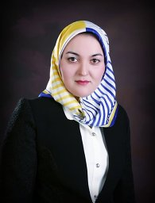

London, Canada
- Affiliate Associate Professor — University of British Columbia
- Associate Faculty — UBC School of Engineering
- Adjunct Associate Professor — University of Waterloo
SECURE-AI4H · Organizing Committee
SECURE-AI4H is coordinated by a multidisciplinary team of researchers and clinicians working at the intersection of AI, healthcare, and safety.
London, Canada
Norfolk, USA
Works on AI and data science methods for healthcare and biomedical applications.
Edmonton, Canada
Leads the i4Health Lab focusing on interpretable and reliable AI for clinical decision support.
London, Canada
Focuses on safe deployment of AI tools in critical care and paediatric medicine.
London, Canada
Works on computational neuroscience and human-in-the-loop AI for health and cognition.
Greensboro, USA
Researches reliable machine learning with applications to health and biomedical data.

Burnaby, Canada
Works on algorithmic fairness and safety in medical imaging and clinical AI.
Providence, USA
Leads research on genomics and machine learning for precision medicine.
Toronto, Canada
Leads projects on integrating AI into health systems, quality improvement, and health policy.